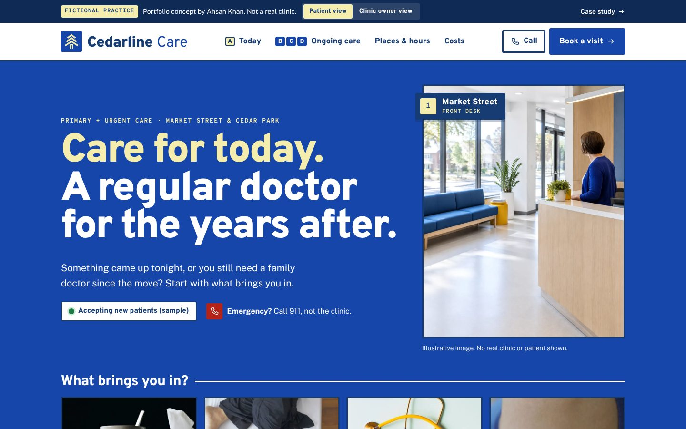
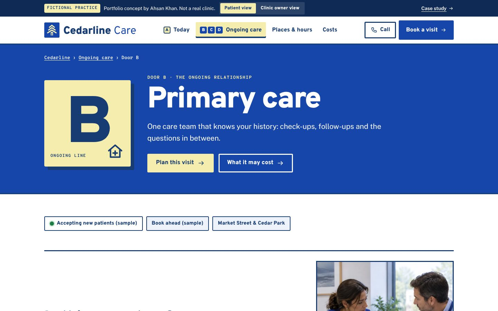
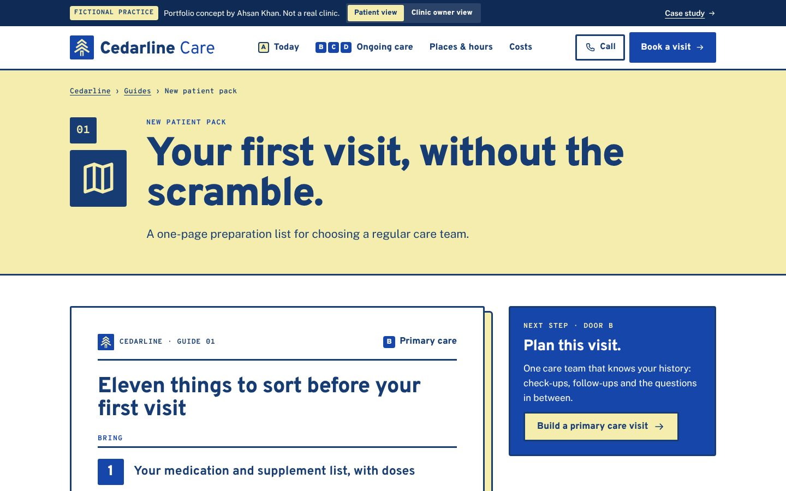
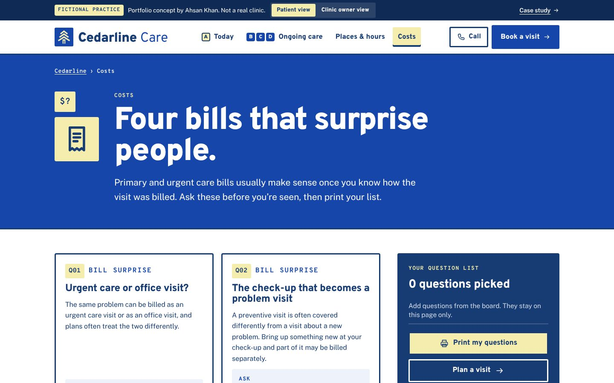
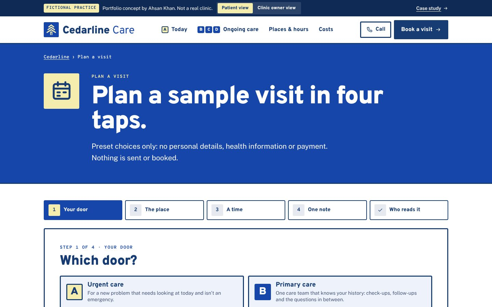
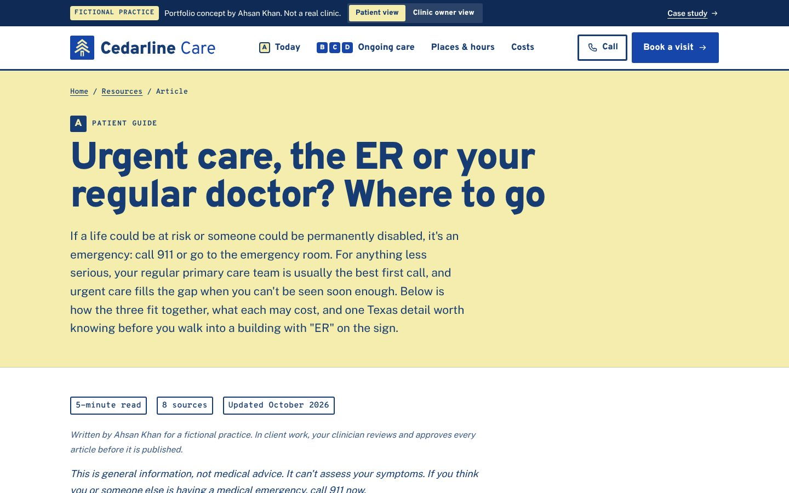
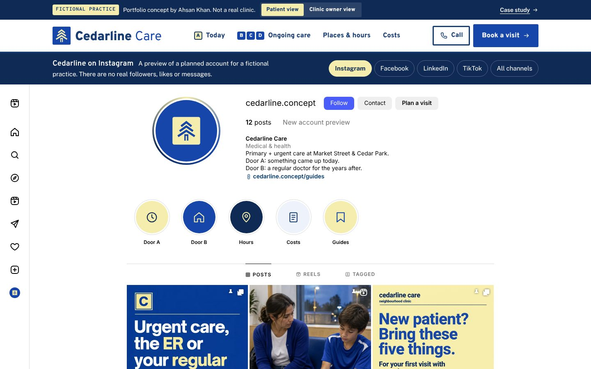
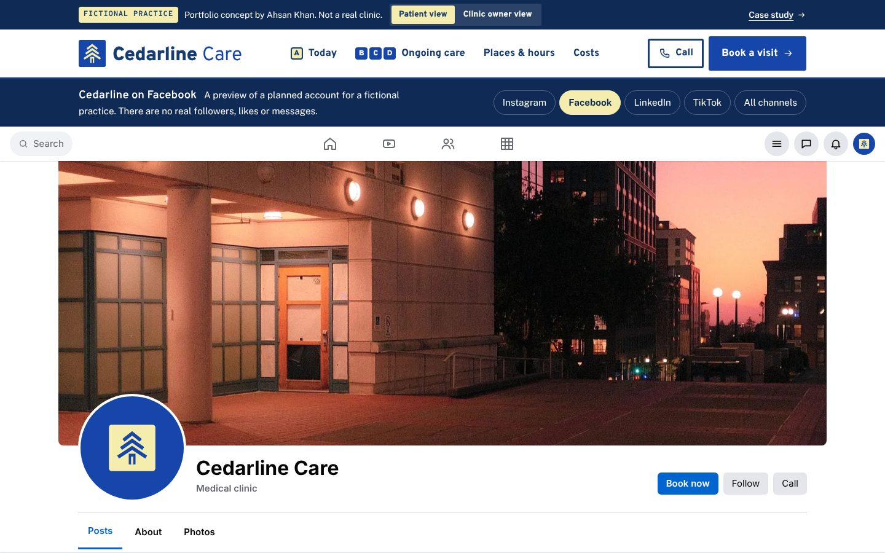
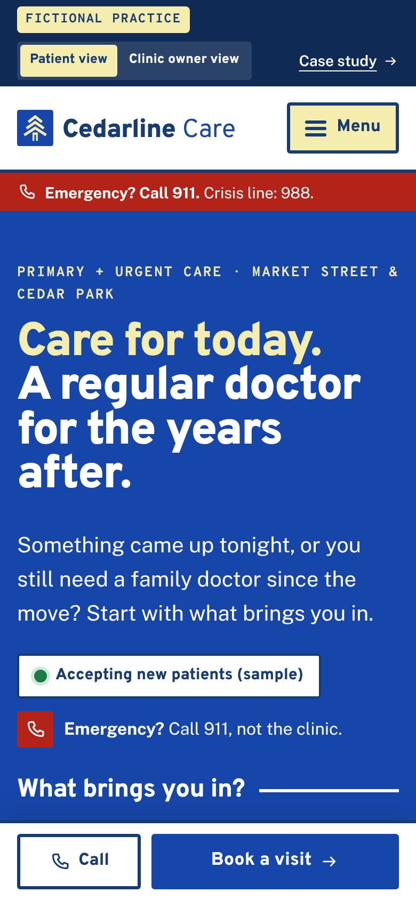
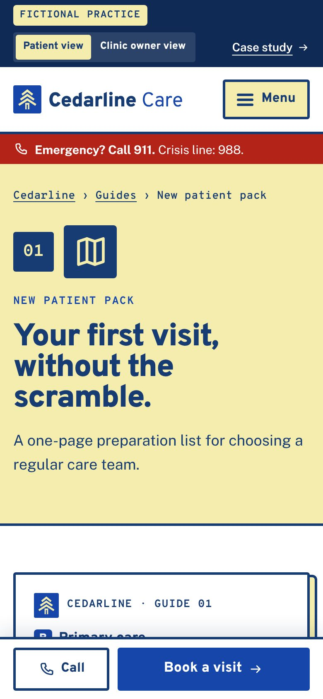

05Fictional healthcare brand · Content, design & build
Make the right kind of visit easier to find.
One front-door line, followed from a generic start to the live page.
Scroll: write, design, build
Cedarline Care is an original fictional brand. ZoomCare services was a research reference, not a client. No patient research, clinical review, live integration or measured campaign result is claimed.

01Write
Two needs, one vague line.
“Your busy life” fits any clinic. It never says where a new concern goes.
The first draft: Comprehensive healthcare for your busy life.
AK · 01One promise hid two visits.
Then name both doors.
Care for today, a regular doctor after. Each visitor sees their own door.
The rewrite: Care for today. A regular doctor for the years after.
02Design
Put the doors first.
Grey boxes first. Both doors in one headline, the front desk right beside it.
AK · 02The 911 line sits just below.
Make it feel like Cedarline.
Cobalt and ink signage, butter yellow for today. Built like wayfinding signs.
03Build
Ship the real page.
One of 25 pages. Three taps on “Which door?” send a visitor to the right door.
AK · 03Live. Take the three taps.

- 01Write
- 02Design
- 03Build
I wrote it, designed it and built it.
From the first click to the front desk, you talk to me.
Take the three taps ↗For the curiousThe video, the full kit, every version and how it was checked
- Project
- Independent fictional practice
- Role
- Research, content, brand direction & build
- Deliverable
- 25 pages · 4 social profiles · “Which door?” chooser
- Tools
- HTML, CSS & JavaScript · its own static generator
The kit: what Cedarline Care shipped, beyond the pages
Reality checkThe real market, references and rules behind a fictional practice
Modeled on · Austin, TX
Austin passed one million residents in 2025, and Texas has the highest uninsured rate of any state. A clinic serving both new residents looking for a regular doctor and people paying out of pocket for a same-day visit needs clear routes and clear cost language.
- The City of Austin reported 1,002,632 residents in 2025, its first time above one million, making it the 12th most populous U.S. city (City of Austin, May 14, 2026, citing U.S. Census Bureau estimates). Source ↗
- 16.7% of Texans had no health insurance in 2024, ranking Texas 50th among states (America's Health Rankings, from the Census Bureau's American Community Survey). Source ↗
- Travis County had 1,363,767 residents in 2024, and 32.6% of residents speak a language other than English at home (ACS 2024 1-year estimates). Source ↗
Real
- ZoomCare, One Medical and CommUnityCare as public-site references (no affiliation)
- The Austin and Texas market figures above
- HIPAA, Texas HB 300, Section 504, the No Surprises Act and the Texas Medical Board advertising rule
- Google's health advertising policy
- The working website, its planner and its privacy-first build
Invented
- The name Cedarline Care and its brand identity
- The Market Street and Cedar Park location concepts, their access notes and the sample parking plan
- Care teams, roles and the visit coordinator
- The visit planner, its sample times and the demonstration acknowledgement
- The social profiles, posts and the "Know your visit before you book" campaign
- AI-generated clinic imagery
Real providers reviewed References, not clients
- ZoomCare ↗What their site does: Groups its services under "Everyday Care" (urgent, primary, emergency) and "Specialty Care", gives virtual care its own section, and keeps a "Schedule now" button in the header.What this concept does: Cedarline keeps the split between everyday and new-concern care, but asks for the visit purpose before any time slot and shows no prices or speed promises, because a fictional clinic has no real availability to promise.
- One Medical ↗What their site does: Membership-led primary care ($99/year on its homepage) with offices, including Austin, plus a separate Virtual Care section and same/next-day appointments.What this concept does: Cedarline has no membership or virtual visits. It shows how a practice can separate an ongoing care relationship from a one-off visit without a subscription model.
- CommUnityCare Health Centers ↗What their site does: A Central Texas health center network that presents itself as a healthcare home regardless of insurance or ability to pay, with a "Paying for Your Care" section and an estimate-your-cost tool.What this concept does: Cedarline borrows the idea that cost questions belong next to care routes. Its costs page explains estimates, benefits and bills without naming fees or insurers.
Rules the marketing has to follow
| Rule | What it requires | On this site |
|---|---|---|
| HIPAA and tracking technologies ↗ | HHS says tracking tools on a clinic's site can expose protected health information, that tracking on logged-in pages such as portals generally has access to it, and that every tracking vendor that receives it must sign a business associate agreement (BAA). A federal court in Texas vacated part of this guidance on June 20, 2024 (the part about public, logged-out pages); the rest of the page still stands. | No tracking, analytics or ad tags: the only script is the site's own first-party file, and the demo privacy page says the build has no analytics tags. The planner uses preset choices held in page memory and submits nothing. Would need: a BAA with any analytics, chat, form or scheduling vendor that touches patient data, and no third-party tags on booking or portal pages. |
| Business associate agreements for vendors ↗ | Any cloud or software vendor that creates, receives, stores or sends a clinic's electronic health information is a business associate and must sign a BAA, even if it only stores encrypted data it cannot read. | Nothing is collected or stored: the site is static pages and the planner keeps choices in page memory. Would need: BAAs with the host, form, scheduling and messaging vendors before any real intake. |
| Texas notice of electronic disclosure (HB 300) ↗ | Texas Health and Safety Code §181.154 requires a covered entity to tell patients when their health information may be disclosed electronically, for example with a notice on its website, and to get separate authorization for electronic disclosures outside treatment, payment and operations. | Would need: a Texas electronic-disclosure notice on the real privacy page. The current page is a demo notice that says no patient information is collected. |
| HHS Section 504 web accessibility rule ↗ | Clinics that receive HHS federal financial assistance must make their websites and apps meet WCAG 2.1 Level AA. An interim final rule effective May 7, 2026 moved the deadlines to May 11, 2027 (15 or more employees) and May 10, 2028 (fewer than 15). A real clinic would confirm with counsel whether it is a recipient. | Every page declares its language, starts with a skip link, gives every image alt text and labels the planner controls. No formal WCAG 2.1 AA audit has been run. Would need: a full audit (keyboard, contrast, focus order, the downloadable guides) before launch. |
| No Surprises Act good-faith estimate ↗ | Uninsured patients, and patients choosing not to use insurance, are owed a written good-faith estimate of expected charges: within 1 business day when care is booked 3–9 business days ahead, within 3 business days when booked 10 or more days ahead or when they ask. | The costs page separates an estimate, insurance benefits and a final bill, and tells self-pay visitors to ask for the total expected cost. Would need: a written good-faith estimate process for scheduled self-pay visits and the federal notice on the site. |
| Texas Medical Board advertising rule ↗ | Physician advertising in Texas must not be false or misleading. 22 TAC §164.3 (amended effective January 9, 2025) bars "board eligible"-style wording that suggests board certification, testimonials without a credentials disclaimer and disclosure of any payment, unsubstantiated claims of unique skill, deceptive fee or "free" claims, and showing models or actors without saying they are not patients. | No testimonials, prices, clinician names or credential claims. The footer labels all imagery as AI-generated and says no real staff or patients are shown; the team page lists roles, not people. Would need: verified clinician names and credentials before any ad names them. |
| Google Ads: health in personalized advertising ↗ | Google treats health as a sensitive interest category. Ads promoting it cannot use advertiser-curated audiences: no Customer Match, no remarketing lists built from site visitors, no lookalike segments. Google's predefined audiences and contextual targeting remain available. | The site has no ad tags, and the social profiles are local mockups. Would need: campaigns built on Google's predefined or contextual audiences, with no remarketing list made from people who visited urgent-care or test pages. |
Sources checked October 2026. This is a summary for a portfolio, not legal advice; a real clinic would confirm its obligations with counsel.
Measured qualityLighthouse and axe, run October 29, 2026
- 94Performance
- 100Accessibility
- 100Best practices
- 8/9SEO checks
- Accessibility issues (axe, WCAG 2.1 AA)
- 0
- across 6 pages
- Homepage weight
- 409 KB
- everything a first visit downloads
- Largest content painted
- 2.8 s
- simulated mid-range phone, slow 4G
- Layout shift
- 0
- 0.1 or less counts as good
Homepage measured with Lighthouse 12 (mobile) on /sites/cedarline/, served locally without compression, so live numbers should be at least this good. The one SEO check that fails is “page can be indexed”: demos are kept out of search on purpose because they’re fictional. Rerun with scripts/kit/measure-quality.mjs.
Screens8 desktop · 2 phone










Captured from the live demo on this site. Each screen opens its page in a new tab.
Process documentsBrief · sitemap · homepage outline · keyword map
The problem
A single “book now” button hides several different care needs, so requests can land in the wrong scheduling queue.
Goals
- Separate the ongoing relationship (primary and preventive care) from a new, non-emergency concern on the first screen.
- Make visit preparation and cost questions visible before anyone requests a visit.
- Name who owns the next step after a visit, especially test results, and don’t count a portal notification as follow-up.
- Carry each social post into a relevant guide, care page and the sample visit planner.
Questions the site must answer
- Should I book primary care, a preventive visit or urgent care?
- Can I see the same care team for follow-ups?
- Does urgent care replace a regular doctor?
- Is every part of a wellness visit covered?
- What should I bring to a first visit with a new care team?
Keyword map
| Topic | Targets | Intent | Page |
|---|---|---|---|
| Primary care / a regular doctor | primary care doctor accepting new patients · find a primary care provider · new patient primary care visit | commercial | primary-care.html |
| Urgent care for non-emergency concerns | urgent care for non-emergency concerns · same-day care for a new concern · urgent care clinic visit | commercial | urgent-care.html |
| Preventive and wellness visits | annual wellness visit · what happens at a preventive visit · preventive care visit checklist | informational | preventive-care.html |
| Tests and follow-up | who explains my lab results · questions to ask after a lab test · lab test follow-up | informational | tests-follow-up.html |
| Preparing for a first visit | what to bring to a new doctor appointment · first visit with a new primary care doctor · new patient checklist doctor | informational | guide-first-visit.html |
| After the appointment | questions to ask after a doctor visit · what happens after my appointment · how to follow up on a referral | informational | guide-after-visit.html |
| Visit costs and coverage | urgent care cost without insurance · does insurance cover preventive care · doctor visit out-of-pocket cost | commercial | costs.html |
| Local discovery | primary care near me · urgent care near me · primary care clinic Austin | local | locations.html |
| Brand | Cedarline Care · Cedarline Care locations · Cedarline Care plan a visit | navigational | index.html |
| Urgent care, the ER or your regular doctor? Where to go | urgent care vs ER · urgent care vs primary care · when to go to the ER | informational | urgent-care-vs-er-vs-primary-care.html |
Keyword targets are proposals from patient-question research; search volumes were not measured.
Flagship article1,172 words · 8 sources
Search result preview Mockup
cedarlinecare.example › urgent-care-vs-er-vs-primary-care
Urgent Care vs. ER vs. Primary Care: Where to Go
Not sure whether to go to urgent care, the ER or your regular doctor? A plain guide to each, what it may cost, and the Texas freestanding ER rule to know.
- Target
- urgent care vs ER
- Also covers
- urgent care vs primary care · when to go to the ER · what can urgent care treat · freestanding ER Texas
- Intent
- informational: the reader has a new health concern right now and wants to know which kind of care to use before they leave the house.
- Review
- Written by Ahsan Khan. The practice is fictional. In client work, your clinician reviews and approves every article before it is published.
The 8 sources
- When to use the emergency room - adult (MedlinePlus, U.S. National Library of Medicine)
- Urgent care (HealthCare.gov Glossary)
- Emergency medical condition (HealthCare.gov Glossary)
- 988 Suicide & Crisis Lifeline
- No Surprises Act: consumers (CMS)
- No Surprises Act key protections (CMS)
- Freestanding Emergency Medical Care Facilities (Texas Health and Human Services)
- Texas Health and Safety Code § 254.155, Notice of Fees
Read “Urgent care, the ER or your regular doctor? Where to go”
Search volumes were not measured, so none are claimed.
Ad packGoogle search · Facebook & Instagram · policy notes
Search ad preview Mockup
Sponsored · cedarlinecare.example/index
Cedarline Care | Primary + Urgent Care | A Regular Doctor in Austin
Primary care for the ongoing relationship. Urgent care when a new concern comes up.
Campaign: Cedarline | Search | Primary + Urgent Care | Austin (sample). Final page: index.html.
All 15 headlines 30 characters max
- Cedarline Care14
- Primary + Urgent Care21
- A Regular Doctor in Austin26
- Room for the Unexpected23
- Non-Emergency Urgent Care25
- Find a Regular Care Team24
- Preventive Visits17
- Plan Your Next Visit20
- Know Who Follows Up19
- Ask About Costs First21
- Same Clinic, Different Doors28
- Tests and Follow-Up, Explained30
- Market Street + Cedar Park26
- Bring Your Questions20
- A Plan to Come Back To22
Descriptions 90 max
- Primary care for the ongoing relationship. Urgent care when a new concern comes up.83
- Start with the visit you want to have. No need to know every service name first.80
- Ask about cost, location and follow-up before you book. Our guides help you prepare.84
- For a medical emergency, call 911. For everyday care, plan your visit with Cedarline.85
Keywords
"primary care doctor austin" · [primary care clinic austin] · "family doctor austin" · "urgent care austin" · "urgent care cedar park" · "non emergency urgent care" · "annual physical austin" · "wellness visit austin" · [new primary care doctor austin] · "preventive care visit"
Negative keywords
emergency room · er wait times · jobs · careers · salary · nursing school · veterinary
Facebook & Instagram ads Mockups
How these ads stay within the rules
| Rule | How it’s handled |
|---|---|
| No implied personal attributes ↗ | Copy describes the clinic, never the reader. No "you" + condition lines such as "Feeling sick?" or "Got a fever?"; the urgent care line speaks of "a new, non-emergency concern". |
| Sensitive detailed targeting is gone ↗ | Meta audiences use location and age only. No health-cause, condition or life-event interests, even where a similar option still appears. |
| Health is a sensitive targeting category ↗ | Search campaigns run on keywords and location only. No remarketing, Customer Match or custom segments built from primary or urgent care page visitors. |
| Healthcare and medicines ↗ | Ads describe visit types only. No prescription drug names, test brands or treatment claims, and no keyword on prescription drug terms. |
| No fear, false urgency or improbable results ↗ | No countdowns, "today only" lines, or illness-based fear. No "walk in now", wait-time or same-day claims, because the site makes no availability promise. One description points emergencies to 911. |
| Tracking pixels on a health site ↗ | Meta Pixel and Google tags stay off the visit planner and any booking or registration step. Conversions are counted from a generic thank-you page with no visit reason in the URL, and any vendor that would touch PHI needs a BAA. |
Written for a fictional practice; nothing here has run or been measured. Every character limit was checked by script.
Local SEO & reviewsGoogle Business Profile · review requests · safe replies
Business Profile Mockup
Cedarline Care
Medical clinic · Urgent care center · Family practice physician
Cedarline Care is a neighborhood primary and urgent care practice with two settings, Market Street and Cedar Park. Primary care is the ongoing relationship: preventive visits, follow-up conversations and a regular care team who knows your history. Urgent care is a separate route for new, non-emergency concerns that need attention sooner than a routine visit. We try to make the practical side clear before you arrive. Ask us what a visit is likely to cost, what to bring, and who will follow up on any test or referral. For a medical emergency, call 911.
Services
- Primary care. A regular care team for your health questions, preventive care and follow-up conversations. Bring your medication list and the two or three questions that matter most.
- Urgent care (non-emergency). A route for new, non-emergency concerns that need attention sooner than a routine visit. Call ahead to confirm we can evaluate your concern. For an emergency, call 911.
- Preventive visits. A conversation about your history, priorities and preventive care options. Ask which parts of the visit your plan covers before you come in.
- Tests & follow-up. If a test is ordered, we explain where it happens, how to prepare and who will explain the result. You leave knowing who owns the next answer.
Posts
- Update
Primary care and urgent care are different visits. One builds an ongoing relationship. The other is for a new, non-emergency concern. Our visit-choice guide explains the difference without asking you to diagnose yourself.
Button: Learn more - Update
Before a visit, it helps to know three things: what the visit includes, what your plan covers, and what could change the bill. Our cost-questions checklist keeps them separate.
Button: Learn more - Event
Sample event: an evening Q&A at Market Street on choosing a regular care team. Bring questions about follow-up, records and costs. No personal health questions in the room; those belong in a private visit.
Button: Learn more
Questions & answers
- Is urgent care the same as the emergency room?
- No. Our urgent care is for non-emergency concerns. For a medical emergency, call 911 or go to the nearest emergency department.
- Can I keep seeing the same care team for follow-ups?
- That is the aim of primary care here. When you call, ask which clinicians are taking new patients and how follow-up visits are scheduled.
- How much will my visit cost?
- It depends on the visit, any tests and your plan. Call us with the visit type and your plan details and we will explain the estimate and what could change it.
Asking for reviews: every patient, the same way
- Ask every patient with a completed visit. No screening by satisfaction score first (no review gating).
- No incentives of any kind for a review: no discounts, gifts, raffles or credits.
- Follow FTC rules: no fake, bought or staff-written reviews, and no pressure to remove a negative one.
- Never confirm or deny in a public reply that someone is a patient.
- No PHI anywhere: requests and replies name no visit type, clinician, date or condition.
When: One email 24 hours after every completed visit (primary, preventive or urgent), one SMS reminder 4 days later only to patients who opted in to texts, then stop. Requests are triggered by the visit being closed in scheduling, never by a survey score.
Subject: How did we do?
Hello, Thank you for choosing Cedarline Care. If you have a moment, we would value an honest review of your experience, whatever it was. It helps neighbors choose a practice and helps us see what to improve. Leave a review: [Google review link] Please keep health details out of your review. If you have a question about your care, call us at [main number] instead and we will help. Thank you, The Cedarline team
Text message
Cedarline Care: we would value an honest review of your experience: [short link]. Please skip health details. Reply STOP to opt out.
Reply to a positive review
Thank you for taking the time to share this. Kind words like these mean a lot to the whole Cedarline team. — The Cedarline team
Reply to a negative review
Thank you for raising this. We take every comment seriously, and privacy rules mean we cannot discuss any details in a public reply. Please call our practice manager, [Name], at [main number] so we can listen and look into it. — [Name], Practice Manager
Neither reply confirms that the reviewer is a patient.
The receipts
The brief
A single “book now” button hides several different care needs.
The intended audience: Busy adults comparing a new primary care practice with a visit for a more immediate, non-emergency concern. Reviewing the public ZoomCare services website suggested a useful structural lesson: separate visit types and show the practical route into care. I used that observation to develop an independent brand and a complete patient-facing concept. The questions below are design hypotheses, not interview findings.
- 01The new concern and the ongoing relationship need different routes.
- 02Make visit preparation and cost questions visible before a request
- 03Carry useful social offers into relevant service and visit routes
- 04Show operational ownership without presenting a working clinical integration
All 3 versionsFrom reference pattern to an independent concept.
These are the stages of this original build, not a claimed redesign history for the reference organization.
Identify the visitor’s decision
ZoomCare services provided a public reference for separate visit types and show the practical route into care. No private operations or patient transactions were audited.
Build around the care conversation
“A regular doctor. Room for the unexpected.”
Designed like civic wayfinding: every kind of visit is a signed door on one of two lines, Today (urgent care) and Ongoing (primary, preventive, tests and follow-up), and both lines meet at the same regular care team on a transit-style map. Cobalt and ink signage on warm off-white, butter yellow for “today”, Overpass and Public Sans, and hand-drawn pictograms.
Connect content to a sample handoff
Service pages, three campaign offers, four social profiles and a synthetic visit planner make the proposal inspectable.

Palette & typeOne brand, carried into each channel.
Designed like civic wayfinding: every kind of visit is a signed door on one of two lines, Today (urgent care) and Ongoing (primary, preventive, tests and follow-up), and both lines meet at the same regular care team on a transit-style map. Cobalt and ink signage on warm off-white, butter yellow for “today”, Overpass and Public Sans, and hand-drawn pictograms.
#FFFFFFThe colour the site is known by#173C73Type, navigation and primary actions#1746AALinks, signature feature and highlights#F4EDADBands, chips and supporting panelsThe signature feature first
A new concern and an ongoing relationship need different routes. The chooser asks the one question that matters first, then sorts the rest.
A distinct social role
Each channel is built like the real platform page, with real posts: an Instagram grid of which-door, new patient and follow-up carousels designed in Canva in the signage style, between photos of both places; a Facebook Page that answers “what happens if I just turn up?”; a LinkedIn company page with a document post on where an urgent care note goes; and TikTok captioned storyboards that start with a rolled ankle at practice.
A useful mobile path
The same signature feature, guides and planner, laid out for a phone rather than shrunk onto it.
Build & checksA working concept from the first post to the next owner.
Cedarline Care has its own generator, layout, type and interactions, so it doesn’t read as a template of the other practices. Interaction state stays in the current page.
- Static HTML, CSS and JavaScript
- Astro portfolio case study
- Local font files and optimized WebP imagery
What it does
- Three-tap chooser with an emergency stop
- Sample hours board by door, labelled illustrative
- A planner that starts from the chooser’s answer
- A patient view and a clinic-owner view, with a note on what each part does for the clinic
- Three downloadable guides, and social previews that lead to them
How it was checked
- Generated route and asset validation
- Portfolio type and build checks
- Responsive browser review and interaction checks
What I built, and what an operating practice would bring
This project
- Original identity, copy, information architecture and visual direction
- A 25-page practice website with four detailed care pages and a flagship article
- Instagram, Facebook, LinkedIn and TikTok previews
- Three downloadable question packs and a synthetic visit planner
Before a real launch
- Verified clinicians, credentials, locations, access and availability
- Clinical review and approved patient communication
- Actual fees, benefit policies and service eligibility
- System access, security, consent and integration requirements
The working website is evidence of design and implementation. The care operations model remains proposed.
What a real implementation would need to prove
The next phase would test comprehension and operational fit with the practice before connecting systems or running a campaign.
Review with patients and staff
Can a visitor choose a preventive visit, find the cost questions and understand who follows up on a test?
Agree the operational states
A test may be complete while the result explanation is still outstanding. Assign the results question to the clinical team; do not count the portal notification as follow-up complete.
Measure the right result
Observe service-page → planner starts, planner completion and staff-confirmed routing corrections. Measure only with approved aggregate instrumentation after a real launch.
Ahsan Khan — research synthesis, content, brand direction and implementation. AI-generated illustrative imagery; no real clinicians or patients depicted.
Reference: ZoomCare services (https://www.zoomcare.com/services). No affiliation or commissioned relationship. Research notes and image provenance are retained with the project source.